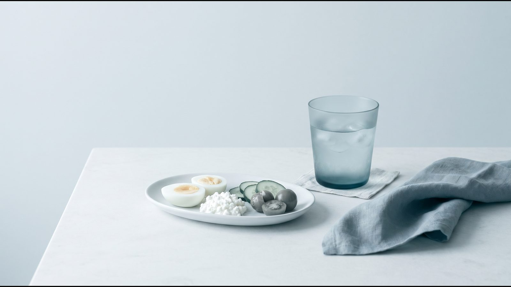
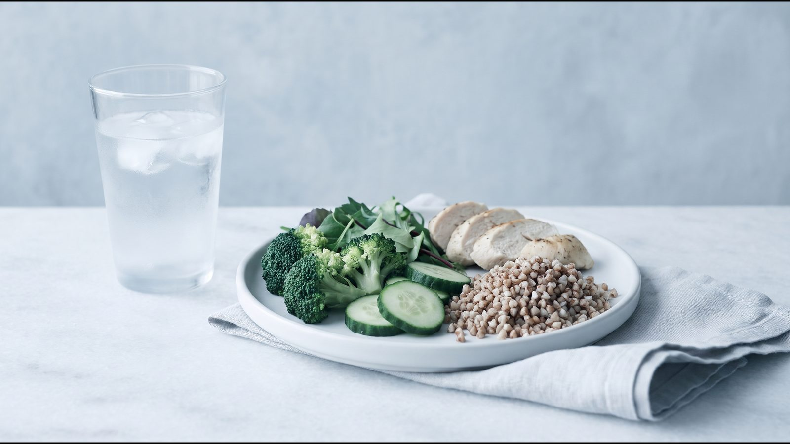
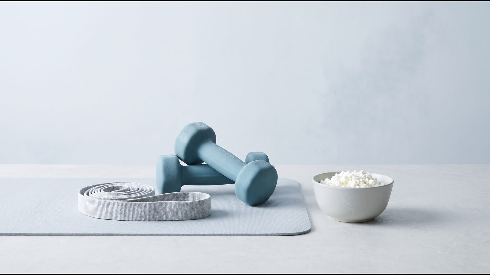
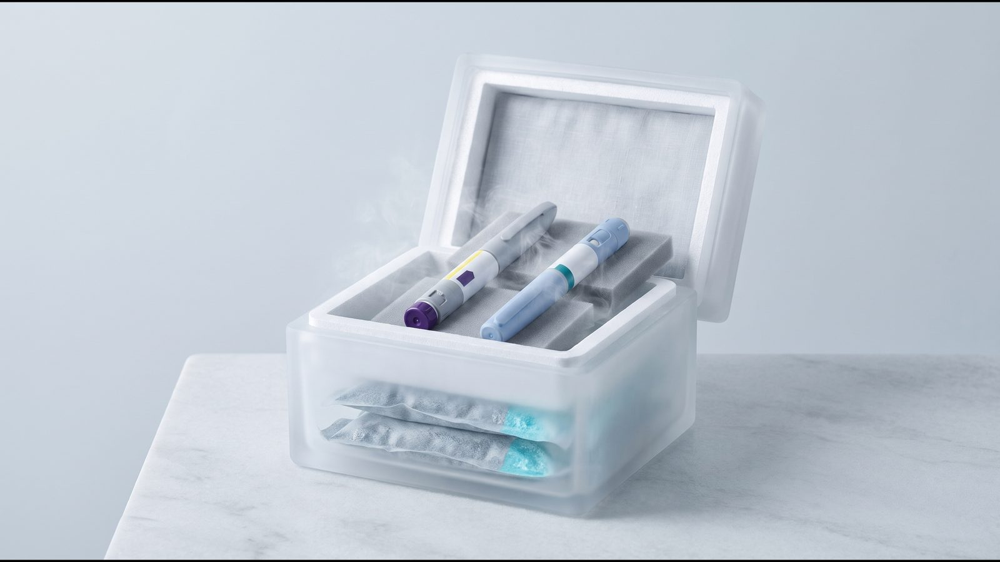

Питание на Mounjaro® и Ozempic®: белок, клетчатка, жидкость и пример меню

Как питаться на терапии GLP-1: короткий ответ
Питание на Mounjaro® (тирзепатид) и Ozempic® (семаглутид) держится на четырёх вещах: достаточно белка, клетчатка и жидкость из еды, небольшие порции каждые 3–4 часа и минимум алкоголя. Так советует совместная рекомендация четырёх американских профессиональных обществ по медицине образа жизни, питанию и лечению ожирения (ACLM, ASN, OMA, TOS, 2025). Те же авторы подчёркивают, что без силовых тренировок одного белка мало, чтобы сохранить мышцы. Конкретную цель по белку, жидкости и калорийности врач определяет с учётом веса, анализов и сопутствующих болезней.
Почему на терапии GLP-1 меняется питание
Терапия GLP-1 — это лечение препаратами, которые действуют на рецепторы гормона GLP-1 (глюкагоноподобного пептида-1). По инструкции Ozempic®, через эти рецепторы в поджелудочной железе и головном мозге семаглутид влияет на уровень глюкозы и аппетит, а также незначительно замедляет опорожнение желудка в ранний период после еды. Тирзепатид действует сразу на рецепторы GLP-1 и GIP; по инструкции EMA, он усиливает сытость, уменьшает голод и тягу к сладкому и жирному, а опорожнение желудка замедляет сильнее всего в начале лечения.
Украинская инструкция Ozempic® приводит снижение калорийности свободных приёмов пищи (когда человек ест сколько хочет) на 18–35 % по сравнению с плацебо. Из меньшего объёма еды нужно получить тот же белок, витамины и жидкость; на этом и построена рекомендация 2025 года.
Белок: сколько нужно и как распределить
По совместной рекомендации ACLM, ASN, OMA и TOS (2025), базовая норма белка для взрослых составляет 0,8 г на килограмм массы тела в сутки, а во время активного снижения веса предлагают цель выше, 1,2–1,6 г/кг. Для людей с ожирением авторы отмечают, что неясно, от какой массы считать, а расчёт на фактическую массу тела может существенно завысить потребность; поэтому как альтернативу они называют 80–120 г белка в сутки или 1,5 г на килограмм безжировой массы. Опускаться ниже 0,4–0,5 г/кг авторы не советуют, а длительно потреблять 2 г/кг и больше советуют избегать. Для сравнения, Европейское агентство по безопасности пищевых продуктов (EFSA) устанавливает для взрослых референсное потребление 0,83 г/кг.
Когда аппетит снижен, порция становится меньше, и белок легко недобрать, если начинать с гарнира или хлеба. Поэтому рекомендация советует есть белковые продукты в начале приёма пищи. В обзоре Leidy et al. (Am J Clin Nutr, 2015) улучшение аппетита и контроля веса связывали с рационом 1,2–1,6 г/кг, возможно, с 25–30 г белка на приём пищи; долгосрочных данных мало, и они противоречивы. Индивидуальную цель по белку определяет врач.
[КОММЕНТАРИЙ ВРАЧА: как врачи клиники определяют цель по белку для людей с большой массой тела или с болезнями почек]
Клетчатка и жидкость
EFSA считает достаточным для нормальной работы кишечника 25 г пищевых волокон (клетчатки) в сутки. ВОЗ советует не меньше 25 г клетчатки из натуральных продуктов и не меньше 400 г овощей и фруктов ежедневно. Запор на терапии GLP-1 встречается часто: в инструкции EMA он отмечен как очень частый в исследованиях снижения веса на тирзепатиде, а в украинской инструкции Ozempic® как частый. Рекомендация 2025 года в этом случае советует пить достаточно жидкости и получать клетчатку из еды, но в первые дни лечения предлагает ограничить жирное и продукты, богатые клетчаткой.
Жидкость нужна ещё и потому, что тошнота, рвота и диарея могут привести к обезвоживанию, а оно способно ухудшить функцию почек. Об этом прямо пишут украинская инструкция Ozempic® и инструкция EMA для Mounjaro®. EFSA считает достаточным общее потребление воды 2,0 л в сутки для женщин и 2,5 л для мужчин. Это вся вода, вместе с той, что содержится в еде, а не только выпитые напитки.
Тошнота: как есть, чтобы легче переносить лечение
Желудочно-кишечные реакции чаще всего возникают в период повышения дозы. По инструкции EMA, в исследовании снижения веса без диабета тошнота была у 24,6–33,3 % людей на тирзепатиде против 9,5 % на плацебо, и частота тошноты, рвоты и диареи со временем снижалась. В украинской инструкции Ozempic® тошнота встречалась у 17,0–19,9 % пациентов в зависимости от дозы, чаще всего в первые месяцы лечения.
Практические советы рекомендации 2025 года:
- есть меньше за раз и чаще: небольшой завтрак, затем небольшие приёмы пищи каждые 3–4 часа;
- пить достаточно жидкости в течение дня;
- в первые дни лечения избегать жирного и продуктов, богатых клетчаткой;
- не есть большими порциями, потому что рвота вероятнее именно после них.
Если тошнота мешает есть и пить, скажите об этом врачу: он решает, нужно ли что-то менять в лечении. Самостоятельно пропускать инъекции или менять дозу не стоит. Реакции и тревожные симптомы разобраны в статьях о побочных эффектах Ozempic® и побочных эффектах Mounjaro®.
Алкоголь, витамины и минералы
Совместная рекомендация ACLM, ASN, OMA и TOS (2025) пишет, что алкоголь может усиливать тошноту и гастроэзофагеальный рефлюкс (заброс кислого содержимого желудка в пищевод) на терапии GLP-1, поэтому его стоит свести к минимуму.
По витаминам и минералам рекомендация допускает профилактический приём добавок тех веществ, которых может не хватать: витамина D, кальция, витамина B12 или комплекса витаминов и минералов. NICE NG246 (2025) советует рассмотреть комплекс с референсной суточной нормой всех витаминов и минералов, если есть сомнение, что их достаточно в рационе. Нужны ли добавки и какие именно, решает врач, при необходимости после анализов.
Пример меню на день
Основа меню — рекомендация 2025 года и тарелка здорового питания Гарвардской школы общественного здравоохранения: половина тарелки овощи и фрукты, четверть белок, четверть цельнозерновые.
| Время | Приём пищи | Пример | Принцип |
|---|---|---|---|
| 8:00 | Небольшой завтрак | омлет из двух яиц, кусок цельнозернового хлеба, огурец | белок в начале дня, малый объём |
| 11:00 | Перекус | натуральный йогурт с ягодами | белок между основными приёмами |
| 14:00 | Обед | запечённая курица или рыба, салат из овощей, немного гречки | сначала белок, овощи на половину тарелки |
| 17:00 | Перекус | хумус с морковью и огурцом | небольшая порция |
| 20:00 | Ужин | тушёная индейка или треска с кабачками, немного булгура | лёгкое блюдо, без жирного |
В течение дня: вода, чай или кофе без сахара. В первые дни лечения сырых овощей, бобовых и цельнозерновых можно временно есть меньше: рекомендация советует ограничить продукты, богатые клетчаткой. Принципы рациона на всю неделю и меню на 7 дней есть в статье Питание для похудения.

Часто задаваемые вопросы
Что делать, если на Ozempic® или Mounjaro® совсем не хочется есть?
Рекомендация 2025 года советует небольшие приёмы пищи каждые 3–4 часа, начиная с белка, и достаточно жидкости; опускать белок ниже 0,4–0,5 г/кг авторы не советуют. Если не получается съесть даже небольшую порцию, скажите об этом врачу.
Можно ли пить алкоголь во время терапии GLP-1?
Совместная рекомендация 2025 года советует свести алкоголь к минимуму, потому что он может усиливать тошноту и рефлюкс. Отдельно рекомендация советует пить достаточно жидкости в течение дня.
Сколько воды пить на GLP-1?
Отдельной нормы для терапии GLP-1 рекомендация 2025 года не даёт, только советует пить достаточно. Общий ориентир EFSA для взрослых: 2,0 л воды в сутки для женщин и 2,5 л для мужчин вместе с водой из еды. Если из-за рвоты или диареи не получается восполнить потери жидкости, обратитесь к врачу.
Нужно ли пить витамины на Mounjaro® или Ozempic®?
Рекомендация 2025 года допускает добавки витамина D, кальция, B12 или комплекс витаминов и минералов для тех, у кого есть риск их нехватки. Нужны ли они именно вам, решает врач, при необходимости после анализов.
Что дальше
Цель по белку, жидкости и калорийности и план на период тошноты врач составляет индивидуально. Рекомендация 2025 года советует регулярно оценивать рацион и жидкость, поэтому к консультации полезно иметь записи:
- что и когда вы ели (дневник или фото тарелки);
- сколько жидкости выпили за день;
- тошнота, рвота, диарея или запор: когда были и после какой еды;
- вес и объём талии, измеренные в одинаковых условиях;
- силовые тренировки и прогулки.
О мышцах и силовых тренировках читайте в статье Как сохранить мышцы на GLP-1. В Avelis Clinic врач-эндокринолог ведёт курс, следит за весом и самочувствием и корректирует лечение; специалист на связи 24/7. Если вы ещё не получаете терапию, начните с теста на похудение.
Источники
- Mozaffarian D et al. Nutritional priorities to support GLP-1 therapy for obesity: a joint Advisory from the American College of Lifestyle Medicine, the American Society for Nutrition, the Obesity Medicine Association, and The Obesity Society. Am J Clin Nutr, 2025;122(1):344–367. https://pmc.ncbi.nlm.nih.gov/articles/PMC12612741/
- Инструкция по медицинскому применению лекарственного средства Оземпик® (РУ UA/19176/01/01). МЗ Украины, Государственный реестр лекарственных средств. http://www.drlz.com.ua/ibp/lz_www.nsf/id/2D837A4C00C398AB42258E2C00345419/$file/UA191760101_304C.mht
- Mounjaro: EPAR Product Information (SmPC, разделы 4.4, 4.8, 5.1). European Medicines Agency, 2026. https://www.ema.europa.eu/en/documents/product-information/mounjaro-epar-product-information_en.pdf
- Leidy HJ et al. The role of protein in weight loss and maintenance. Am J Clin Nutr, 2015;101(6):1320S–1329S. https://doi.org/10.3945/ajcn.114.084038
- EFSA. Dietary Reference Values for nutrients: Summary report, 2017. https://www.efsa.europa.eu/sites/default/files/2017_09_DRVs_summary_report.pdf
- WHO. Healthy diet. Fact sheet, 2026. https://www.who.int/news-room/fact-sheets/detail/healthy-diet
- Harvard T.H. Chan School of Public Health. Healthy Eating Plate. https://nutritionsource.hsph.harvard.edu/healthy-eating-plate/
- NICE NG246. Overweight and obesity management, 2025. https://www.nice.org.uk/guidance/ng246/chapter/Medicines-and-surgery
Материал носит информационный характер и не заменяет консультацию врача. Препараты назначает врач после консультации.
Читайте также


